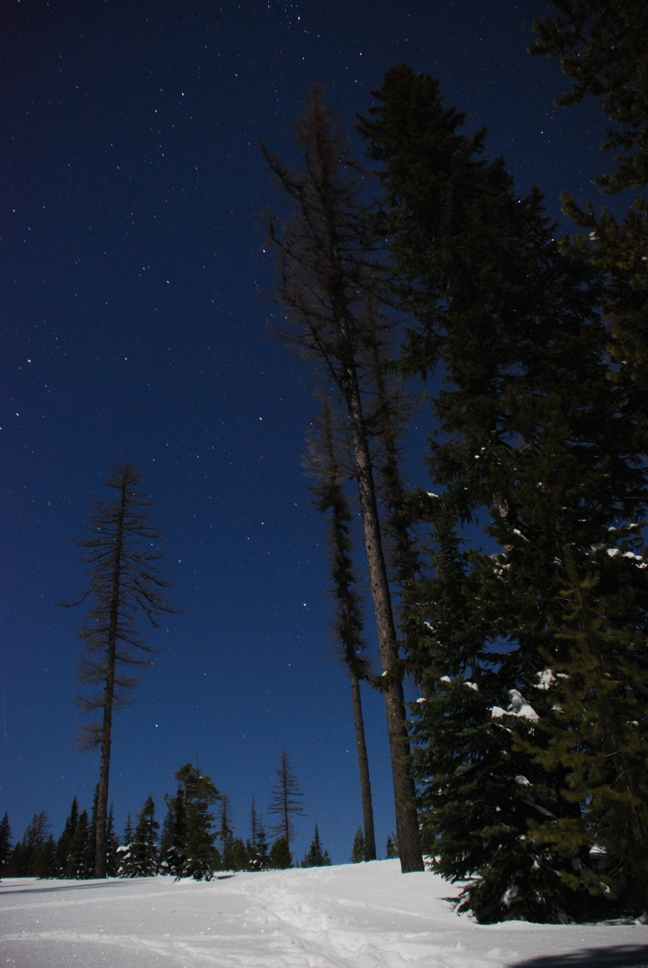
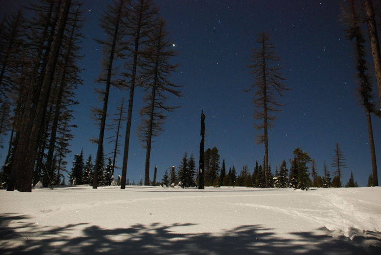
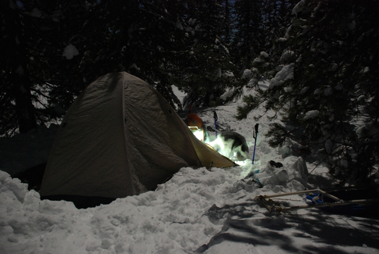
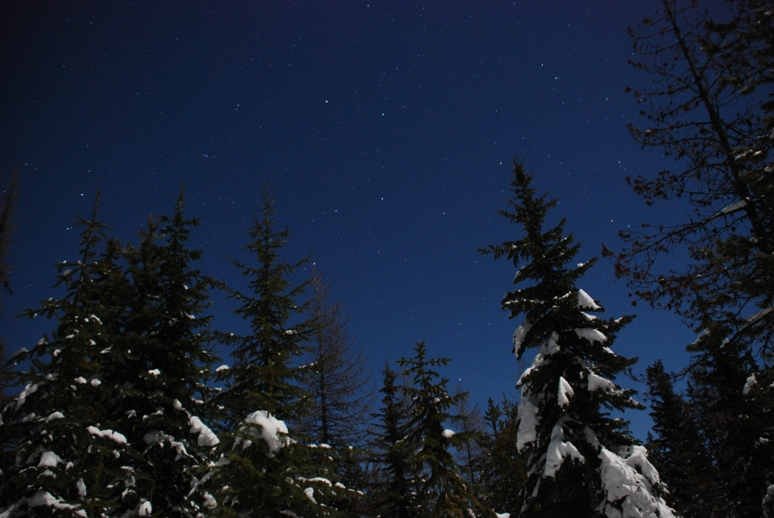
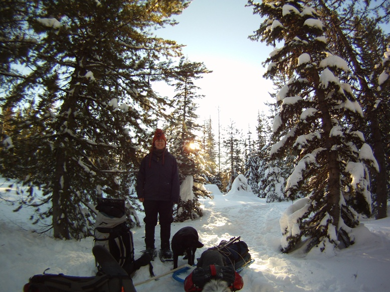
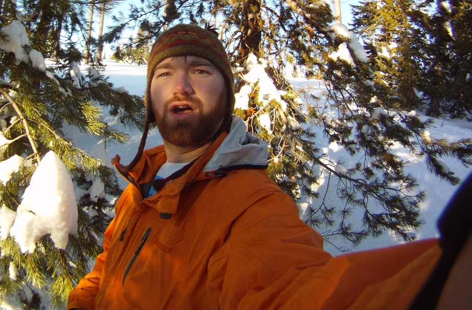
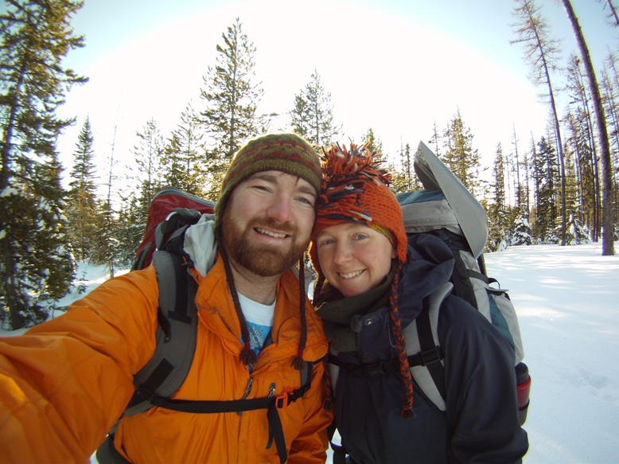
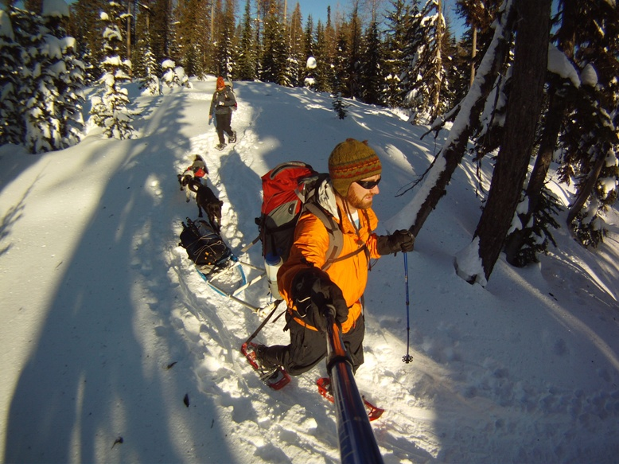
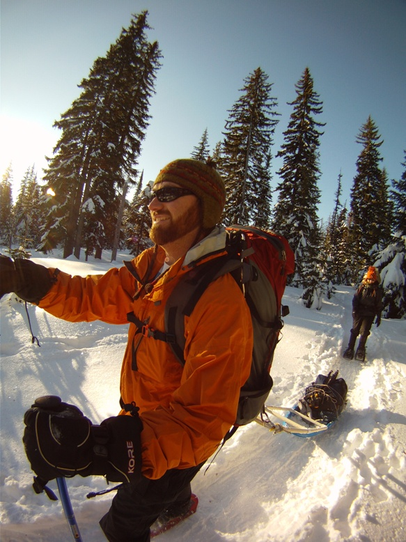

2012_02_Snow
Camping
Written
by Steven
Sunday, 05
February 2012 20:39
Aspen, Carbon, Tara and I went for a
quick overnight snow camping trip this weekend. We headed up to
the
Tollgate area around 6 pm Saturday night. We've had some freezing
fog the
last couple of days here in the Walla Walla Valley, but once we got up
the hill
just outside of Milton-Freewater, we broke free to clear skies.
We
arrived at the Snow Park around 7 pm. We got everything ready and
headed
out. The moon was close to being full and thus we did not need
any lights
to hike in at night (I am refraining from calling it dark...there were
shadows...thus it is not dark!). We hiked in a little over a mile
to a
nice clearing. We made camp, did some night photography, ate some
pasta
and then went to bed...much to Aspen's dismay. She thinks being
in the
tent is just about the worst thing ever! We got up Sunday morning
to
bright clear sunny skies. We hiked out and stopped to have
breakfast at
the Longbranch Cafe in Weston.
|  |
 |
 |
|  |
 |
 |
|  |
 |
 |
{kind=link}
{kind=link}
{kind=link}
{kind=link}
{kind=link}
{kind=link}
{kind=link}
{kind=link}
{kind=link}